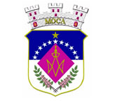
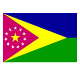
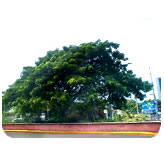
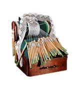

Fue diseñado por el pintor mocano, Augusto Hernández por petición de la Sociedad Pro Conmemoración del Bicentenario de Moca, Inc., adoptado oficialmente el 29 de febrero de 1972 por la Asamblea Municipal. Tiene forma oblongada, dividido en campo plateado y cielo azul unidos por un losange púrpura, el color de flor de Moca. El losange está cargado de simbolismos religiosos y en su parte inferior dos hojas y ramas frondosas del árbol de Moca y una dorada que significa el pueblo.
Dentro del losange se encuentra un monograma dorado de la Virgen María superado por una corona cristiana del mismo metal. El escudo está coronado por una corona plateado en forma de castillo de tres torres almenadas.
Sobre la corona está esculpida en oro la palabra Moca y en los huecos de las puertas frontales del castillo hay dos candados dorados con ojos en forma de cruz latina que representa el excelso patrón de Moca, San Juan Nepomuceno quien fue martirizado por guardar valiente y celosamente el secreto de la confesión. El color plateado y blanco significa pureza y modestia, el azul es el cielo mocano que simboliza paz y libertad. En losange significa doncella. La corona es de la Monserrate puertorriqueña. Las hojas verdes y las ramas son representativas del árbol de Moca (Indiras Inermis) donde las ramas significan fertilidad e inmortalidad. La Corona en forma de castillo significa autonomía, unión y confraternidad.
Fue diseñada y preparada por el pintor mocano Augusto Hernández y aprobado por la Sociedad Pro Conmemoración del Bicentenario de Moca. Fue adoptado oficialmente el 19 de febrero de 1972 por la Asamblea Municipal.
La bandera tiene forma rectangular que consiste de un campo triangular equilátero color púrpura sobre este otro triangulo dorado, ambos señalando hacia el horizonte del campo azul y verde de la bandera. En el campo púrpura que significa el color de flor de Moca, aparece once estrellas plateadas de cinco puntas girando alrededor de una estrella color dorada que significa Moca y sus barrios.
El púrpura representa humildad y sabiduría, el color azul además de representar el cielo, simboliza paz y libertad. El color verde representa tierra mocana símbolo de fertilidad e inmortalidad.
El árbol de Moca pertenece a la gran familia botánica de las leguminosas como lo es el Samoa, Algarrobo, Tamarindo y Flamboyán entre otros. Dentro de esta familia hay un pequeño grupo de plantas que se conoce científicamente con el nombre de Andiras o Andireas del cual forma parte el árbol de Moca. Este es fácil de reconocer a simple vista si se conoce sus características elementales las cuales detallamos a continuación:
Hoja: Esta tiene forma impariplanada. Esto quiere decir que está compuesta de hojuelas pareadas superdadas por una hojuela impar. Las hojuelas aparecen en pares de cinco, seis y siete. Además de su natural belleza, la flor de Moca es muy visitada por las abejas. Esto indica que el árbol es muy valioso para los apicultores debido a sus propiedades melíferas.
Flor: Estas se pueden apreciar una plena florescencia en Puerto Rico durante los meses de abril a agosto. La misma crece en racimos ramificados de 6 a 12 pulgadas de largo. La flor individual crece casi pegada a la varilla del racimo lo que apenas tiene peso. La corona es de color púrpura rosado. Su forma es muy parecida a la del guisante. El pistilo de la misma mide ½ pulgada de largo incluyendo el ovario que tiene forma un poco achatada y es de color verde pálido. Los estambres son de color blanco y se encuentran agrupados en conjuntas de 10 estambres. La flor es sostenida por un cáliz en forma de campana.
Tronco: Este alcanza normalmente la altura de 20 a 50 pies. El diámetro de los mismo varía de 6 a 12 pulgadas. En el bosque crece recto. En el campo raso su copa se expande bien ramificada, densa y redondeada. La corteza del tronco adulto mide normalmente ½ a ⅜ de pulgadas de espesor. De ella se obtiene una resina amarilla pardosa que tiene propiedades medicinales tales como laxante, narcótico y vermífugo. La sustancial medicinal que se extrae de esta resina se conoce con el nombre de Andarina.
La madera de Moca en su corazón es de color marrón claro. Además de su belleza, es dura, pesada y fuerte. Según los ebanistas que la han trabajado es buena para moldear debido a que se somete maravillosamente al cepillado, torneado y fijado. Su gran resistencia a las rajaduras la convierte en una pieza ideal para la carpintería y ebanistería.
Fruta o Semilla: La semilla pertenece al grupo de los monosfermos. Tiene forma ovalada. Su color es verde a verde oscuro. Es un poco camosa por fuera y dura por dentro. El tamaño normal de la misma es de 1 a ½ pulgada de largo y un poco menos de ancho. La textura de la corteza del árbol es bastante suave. Entran alrededor de 20 semillas por libra. Este fruto al igual que la corteza del árbol tiene propiedades medicinales o tóxicas según el caso.
El árbol de Moca es parte de nuestra historia de pueblo, es un árbol atractivo vistoso de sombra, envidiable de florescencia, maravillosa y otras cualidades extraordinarias que no encontramos comúnmente en los demás árboles.

Según las mundillistas, Cipriana Vargas vda. De Cabán, La Profesora Catalina Flores, Librada Gerena Vda. De Hernández, María Lassalle Vda. De Vargas, recuerdan que las primeras maestras artesanas de mundillo en Moca a fines del siglo 19 y principios de siglo 20 eran de nacionalidad española. Se conocían por Doña Adriana, Doña Tite, Doña Juanita, Doña Pepa Sánchez y Doña Brígida Román.
Doña Tite tenía su taller frente a la plaza pública de Moca al lado Sur, Doña Adriana estaba ubicada en la calle Salsipuedes conocida hoy como calle Doña Maggie. Otra de las maestras lo fue Doña Manuela Sánchez, madre de la Sra. Nelly Vera. Doña Manuela administraba su propio taller y negocio en el edificio ubicado en lo que es hoy el edificio del Dr. Santiago Montes.
En aquella época las primeras maestras de mundillo cobraban a las jóvenes por enseñar mundillo, lo que indica que la primeras mundillistas mocanas pertenecía a la clase alta.
Cada taller de las maestras servía de acopio de los encajes que producían sus discípulas, los cuales eran vendidos a los mercaderes que llegaban a los pueblos de Aguadilla, Aguada y la Ciudad Capital entre otros.
Al ocurrir el cambio de la soberanía en Puerto Rico, después de la inversión de los Estados Unidos, la artesanía del Mundillo en Moca era una industria floreciente y bien afincada a la tradición mocana que luego se difundió a todos los niveles sociales y económicos del pueblo.
Actualmente Moca y sus barrios cuentan con una gran cantidad de mundillistas y tiendas que se dedican a la venta de traje, ropa de bebé y encajes de mundillo.
Hoy día las artesanas se reúnen mensualmente en grupos para compartir idea y aprender detalles nuevos. En estos momentos conocemos como maestras de mundillo a la Sra. Yolanda Romero y Sra. América Nieves quienes dedican su tiempo a promover la artesanía y a no dejar esta tradición. Además, los artesanos se han organizado y están incorporados como el Taller de Artesanos Mocanos In.